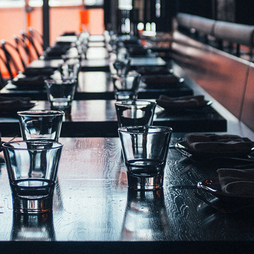

Planning an event?
Two sections of our restaurant can be entirely or partially closed off for private events. Our smaller private dining room seats up to ten people comfortably; it includes a television that can be used to project digital presentations, making it an ideal setting for working business lunch.
Our larger private dining area can accommodate up to forty people; it can be entirely or partially closed off, or left open so your guests can mingle throughout the public space.
Need a bigger space? Contact our social planner for information about renting the entire bistro for you special event. We have hosted weddings, showers, graduations, promotions, and holiday parties for a number of local groups. With a maximum overall capacity of 180 guests, the Bistro is the perfect setting to meet your gathering needs.
Whatever the size of your event, our kitchen staff will work with you to develop a fresh, vibrant menu to suit any need — whether appetizers and snacks or a full sit-down dinner.